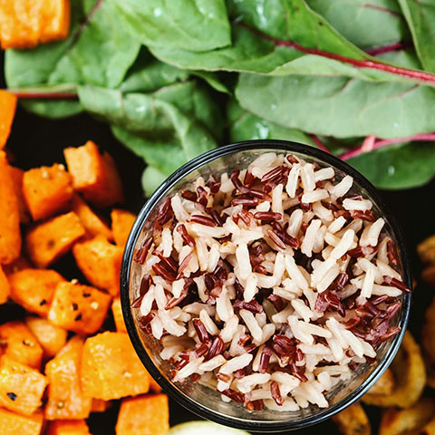

Mall Info
ジャカルタ中心部、BANK INDONESIA（インドネシア銀行）や日本大使館が建ち並ぶジャランタムリン（タムリン通り）に、タムリンモールは都市整備事業の一環として建設され2003年にオープンしました
ジャカルタの伝統と近年のめざましい発展とを背景に、より多くのお客様に愛される独自のモール作りを行っています。
Shop Info

ベジタリアン・ビーガンレストラン「Vegetarian Kitchen（ベジタリアンキッチン）」
| フロア情報 | 5階 レストランフロア |
|---|---|
| 営業時間 | 11:00 ～ 22:30（L.O. 22:00 |
COMMENT
アパレル店「 Thamlin Plaza（タムリンプラーザ）」
| フロア情報 | 2階 ファッションフロア |
|---|---|
| 営業時間 | 10:00 ～ 20:00 |
COMMENT
XXSからXXLまで幅広いサイズのあるアパレルショップです。トレンドにのる服やアクセサリーがたくさんあります。LADIESファッションはもちろん、MENSもかなり充実してます。
商品の値段が安く、タムリンプラーザはジャカルタの若者たちの大人気ファッション店です。平日14時〜15時はタイムセールもあり、対象の商品は20~40％オフになります。チャンスをお見逃しなく！

ベジタリアン、ビーガンの方だけではなく、ヘルシーで美味しい料理が好きな人に愛されてるレストランです。ベジタリアンキッチンは2014年にオープンし、現在大人気店として知られてます。金・土のディナーは完全予約制となります。
一番人気のメニューはイタリアン風ビーガンバーニャカウダー：新鮮の野菜と自家製ソースの相性は抜群で、女性の方に大人気です。